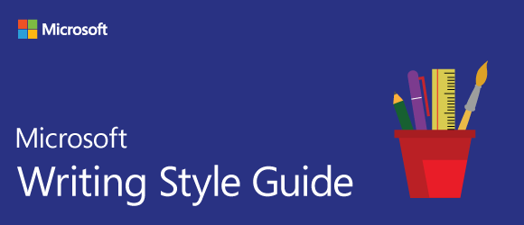
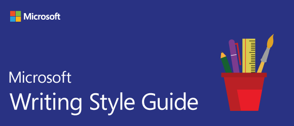

This page is an overview of the well-known style guides used by technical content creators all over the world. Each style guide serves as a valuable resource, consisting of a defined set of rules and recommendations. It encompasses various elements that contribute to the overall quality and consistency of the technical documents. These elements include tone, voice, format, and structure, among others. I provide concise descriptions of the guides and highlight their similarities and differences in terms of technical writing.
Microsoft Style Guide (MSG) is a comprehensive guide for writing and creating documentation, including technical content, user interfaces, and other Microsoft-related materials. It provides guidelines on grammar, punctuation, capitalization, tone, and more. The guide is primarily focused on Microsoft-specific products and technologies but is widely used as a standard for the technical content of different software products. MSG tips for writers who create content about technology are the following:
Apple Style Guide (ASG) tells us to use:
ASG is based on the guidelines from the above books but is customized for Apple-specific content. The guide covers areas like spelling, grammar, punctuation, and capitalization. ASG also provides guidelines for specific areas of writing, including Apple-specific terms, product names, user interface text, and more. The guide is primarily intended for internal use by Apple employees but can be useful for external writers who create content related to Apple products and technologies.
Google Developer Style Guide (GDG) is a guide specifically created for developers writing documentation and code samples for Google-related projects. It provides guidelines on code formatting, documentation, and general technical writing. GDG covers a wide range of topics, including programming style, naming conventions, documentation structure, and more. The guide is publicly available and is widely followed by developers working with Google technologies.
| Feature | Microsoft Style Guide | Apple Style Guide | Google Developer Style Guide |
|---|---|---|---|
| Tone and Voice | Friendly and conversational | Clear and concise | Clear and concise |
| Capitalization | Follows specific rules | Follows specific rules | Follows specific rules |
| Punctuation | Specific guidelines | Specific guidelines | Specific guidelines |
| Formatting | Consistent and well-structured | Consistent and well-structured | Consistent and well-structured |
| Code Samples | Specific guidelines | N/A | Specific guidelines |
 
